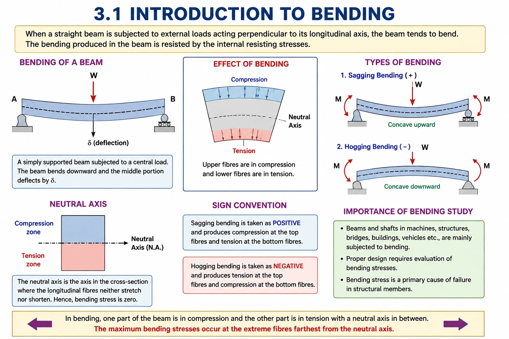
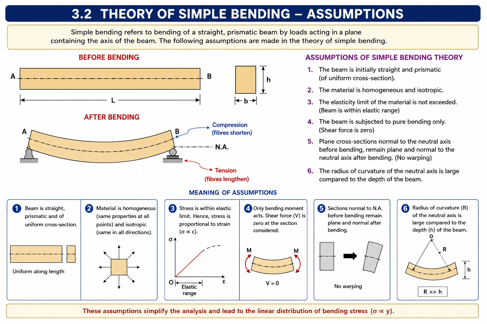
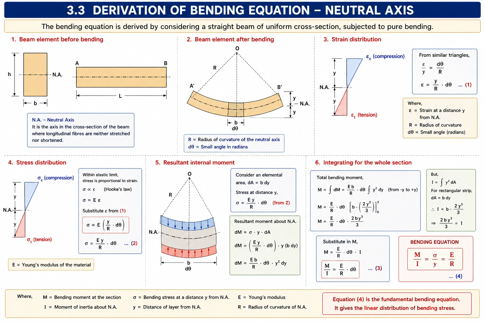
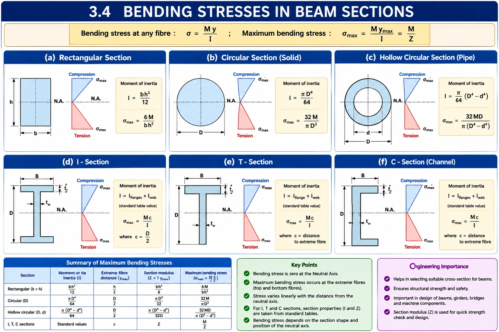
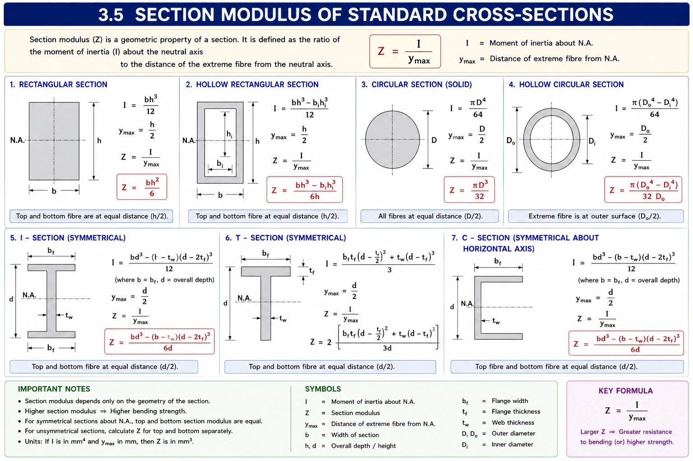
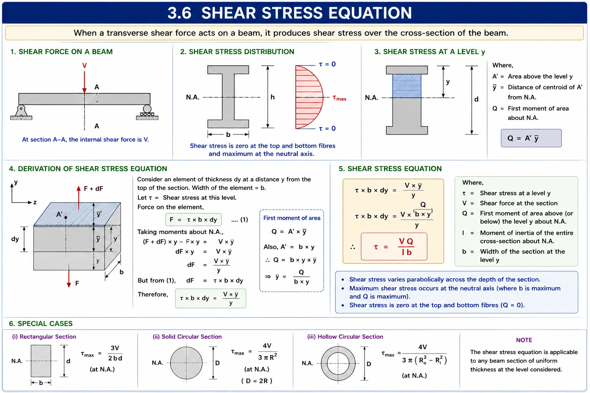
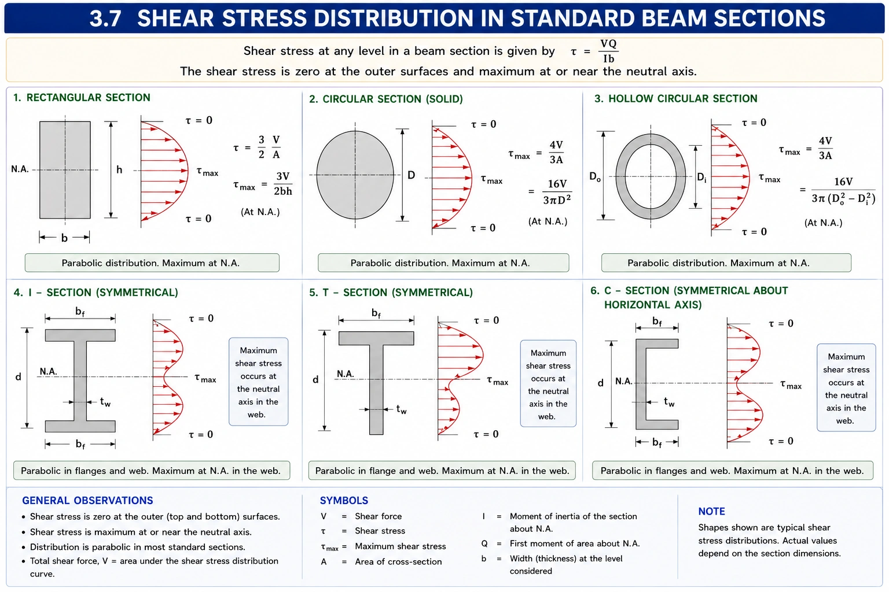
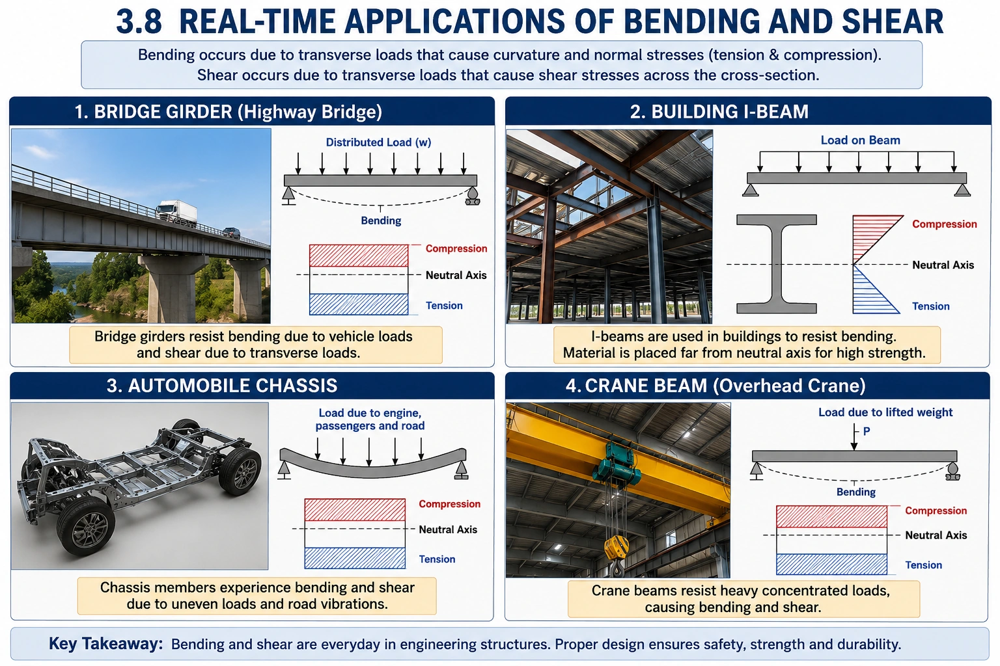
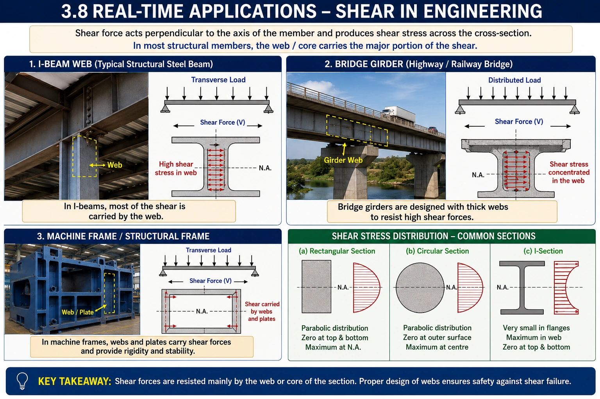

Unit 3 — Bending and Shear Stresses
This unit develops the understanding of how beams resist transverse loading through bending and shear. Students will learn how a beam bends, how the neutral axis is established, and how bending stresses vary across different cross-sections. The unit also introduces the bending equation and the concept of section modulus, which are essential for evaluating the strength of beam sections.
The unit further develops the concept of shear stress in beams, including the governing shear-stress equation and the distribution of shear stress across standard beam sections. These concepts help students analyse and select suitable beam sections for structural and machine applications.
- Understand the theory and assumptions of simple bending.
- Understand the neutral axis and bending equation.
- Determine bending stresses in standard and hollow beam sections.
- Understand and calculate section modulus.
- Understand the shear-stress equation and its terms.
- Interpret shear-stress distributions for standard beam sections.
- Relate bending and shear concepts to real engineering applications.
Introduction to beam bending and the response of beams subjected to transverse loading, including bending, sagging, hogging, tension and compression in the beam section.

The assumptions used in simple bending theory are introduced, together with the behaviour of longitudinal layers of a beam during bending and the development of tension and compression regions.

The neutral axis, radius of curvature, strain distribution and bending-stress distribution are developed to establish the fundamental bending equation M/I = σ/y = E/R.

Determination and interpretation of bending stresses in rectangular, circular, I-section, T-section and C-section beams, including corresponding hollow sections.

Section modulus is introduced as a geometric property used to assess the bending resistance of a beam. Standard expressions for common solid and hollow sections are considered.

The shear-stress equation is introduced for beams subjected to transverse shear force. The meaning of shear force, first moment of area, moment of inertia and section width at the level considered is explained.

Shear-stress distributions across rectangular, circular, I-section, T-section and C-section beams are compared, with emphasis on the location of maximum and zero shear stress.

Real engineering applications connect bending and shear concepts with bridge girders, building I-beams, automobile chassis, crane beams, machine frames and structural webs.

